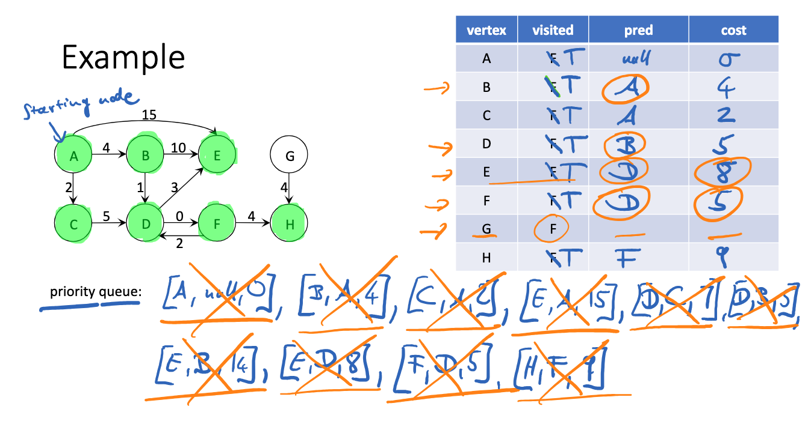

Dijkstra's Algorithm
This page details Dijkstra's Algorithm for finding the shortest path
between nodes.
Algorithm Steps and Things to Keep in
Mind
Visited Nodes
- An essential aspect to Dijkstra's
algorithm is knowing
which nodes have already been visited. This can be done via a mapping
function or structure. It prevents us from revisiting or updating
(extending) the shortest known path of a given node from the
starting location. This process involves updating when a node has
been visited, from which node we were able to reach this node, and
the cumulative cost of the path we took.
Priority Queue
- A priority queue that is updated with
all of the outgoing
edges of nodes we visit, prioritized by the lowest edge weights, is
the most efficient way to find the shortest path to every node in the
graph.
Rebuild Path
- Once we have reached the desired node,
we backtrack using
the previously mentioned mapping structure. We have already obtained
the total cost of the path it took to reach the destination node, and
following the trail of predecessor nodes until we reach the starting
node provides us with the shortest possible path (if the starting and
destination nodes are feasibly connected).
The following is a full example detailing the process of
finding the shortest path from start node A to H.

For more information regarding this algorithm, visit GeeksforGeeks.org.